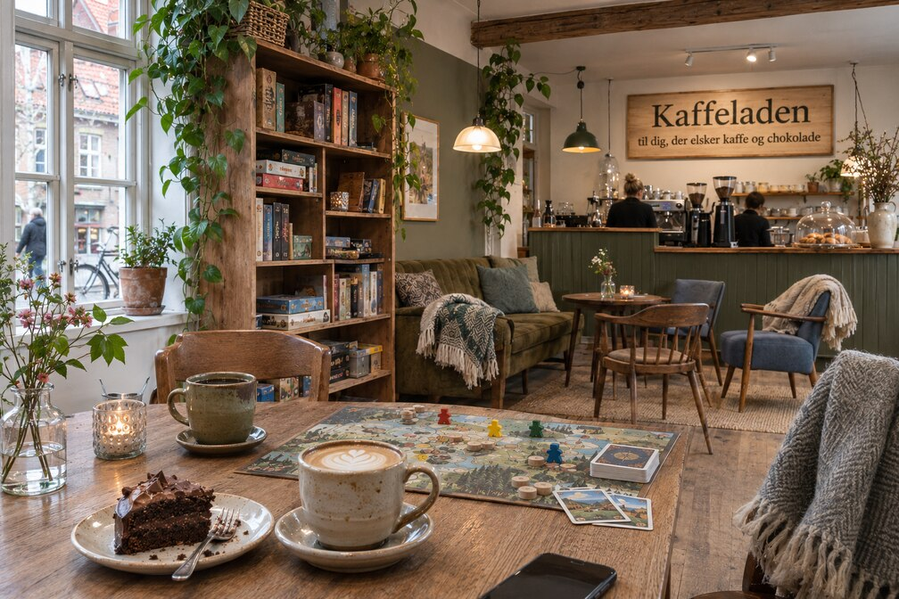

Fyldig espresso med silkeblødt, økologisk mælkeskum.
Kaffebar i hjertet af byen
Kaffeladen
Til dig, der elsker kaffe og chokolade
Her er der plads til den langsomme kop, den gode samtale og et brætspil, der trækker lidt ud. Kom ind, tag et tæppe, og bliv hængende.
Se menuen
Velkommen indenfor
En kaffebar, du ikke behøver skynde dig fra
Kaffeladen er en hyggelig kaffebar i Slagelse, hvor du kan nyde en kop kaffe og et stykke chokoladekage. Vælg et brætspil fra reolen, snup et tæppe, og slå dig ned. Her må du gerne blive lidt længere.
Vores små borde, bløde lænestole og vinduespladser er skabt til både stille stunder, studiepauser og eftermiddage med dem, du holder af.
Det, vi holder af
Tre gode grunde til at komme forbi
Kaffe og kage
God kaffe fortjener godt selskab. Derfor er chokoladekagen altid klar i disken.
Brætspil på hylden
Find alt fra hurtige kortspil til klassikere, der får tiden til at forsvinde.
Plads til at lande
Sæt dig i en blød stol, læg et tæppe over benene, og giv eftermiddagen lidt mere tid.
Sådan låner du et brætspil
- Vælg et brætspil fra reolen.
- Tag det med til dit bord, og spil, mens du er på besøg.
- Sæt spillet tilbage på reolen, når du er færdig.
Små glimt
Stemninger fra laden
Varme kopper, gode kager og hjørner, hvor der er let at falde til.
Gæstestemmer
Det siger vores gæster
“Den slags sted, hvor man bestiller én kop kaffe og pludselig har brugt hele eftermiddagen.”
— Maja
“Chokoladekagen er farligt god, og der var lige præcis det brætspil, vi havde lyst til.”
— Jonas
“Rolig stemning, venlig barista og de bedste vinduespladser til en regnvejrsdag.”
— Freja
Ofte stillede spørgsmål
Hvad er Kaffeladen?
Kaffeladen er en kaffebar, hvor du kan få kaffe, et stykke chokoladekage og spille et brætspil.
Hvad er der på menukortet?
Hos kaffeladen, kan man få diverse typer kaffe, såsom almindelig filterkaffe, cappochino, kaffelatte osv. Man kan også få varm kakao og et stykke hjemmebagt kage.
Hvilke brætspil kan man spille?
Vi har et stort udvalg af brætspil. Man kan spille trivial pursuit, backgammon, skak, matador, kortspil og meget mere.
Kom forbi
Vi sætter kaffen over
Alle oplysninger herunder er fiktive og er kun med som eksempel.
Adresse
Eksempelgade 14, 4600 Køge (fiktiv)
Åbningstider
Man–fre: 08.00–17.00
Lør–søn: 09.00–16.00 (fiktive)
Telefon
12 34 56 78 (fiktivt)
E-mail
hej@kaffeladen-eksempel.dk (fiktiv)